본문
5-6. 두 벡터의 방향이 얼마나 비슷한지 측정한다
두 벡터 A와 B를 내적하면 두 벡터의 길이와 사이각의 코사인이 연결됩니다.

코사인은 두 벡터의 길이가 아니라 방향 관계를 숫자 하나로 요약합니다. 같은 방향에 가까울수록 1, 직각이면 0, 반대 방향에 가까울수록 -1입니다.
| 코사인값 | 두 벡터의 관계 | 방향 해석 |
|---|---|---|
| 1 | θ=0° | 같은 방향 |
| 0 | θ=90° | 서로 직각인 방향 |
| -1 | θ=180° | 정반대 방향 |
두 벡터의 길이를 나누어 제거하기 때문에 크기보다 방향을 비교할 수 있습니다. 머신러닝에서는 문장 임베딩이나 단어 임베딩이 의미상 얼마나 비슷한지 측정하는 코사인 유사도로 사용합니다.
5-7. Transformer에서는 위치를 여러 회전 속도로 표현한다
Transformer의 위치 인코딩에서는 토큰 위치 position을 각도로 바꾼 뒤 같은 각도의 sin과 cos를 한 쌍으로 저장합니다.
position이 증가하면 원 위의 점이 회전합니다. 그리고 차원 쌍마다 div_term[i]가 다르기 때문에 어떤 쌍은 빠르게 회전하고 어떤 쌍은 천천히 회전합니다. 하나의 위치를 여러 주기의 패턴으로 동시에 표현하는 셈입니다.
같은 위치 번호를 넣어도 차원 쌍마다 회전 속도가 다릅니다. 빠른 파동은 가까운 위치에서도 값이 크게 달라지고, 느린 파동은 먼 위치에 걸친 완만한 변화를 제공합니다.
위치를 각도로 변환position×div_term[i]로 현재 차원 쌍의 각도를 만듭니다.
각도를 두 좌표로 변환[sin θ, cos θ]로 원 위의 회전 상태를 저장합니다.
서로 다른 속도를 함께 사용
짧은 주기부터 긴 주기까지 여러 위치 패턴을 하나의 벡터에 담습니다.
전체 흐름으로 기억하기
직각삼각형에서는 각도와 길이의 비율을 연결합니다. 단위원에서는 그 비율이 좌표가 됩니다. 원을 계속 돌리면 반복되는 파동이 되고, 두 방향을 비교하면 코사인 유사도가 됩니다. Transformer는 이 가운데 좌표의 회전과 반복 성질을 위치 표현에 이용합니다.
기초 결론 — 사인과 코사인은 각도에 따른 두 길이의 비율입니다. 단위원 좌표는 별개의 정의가 아니라, 그 직각삼각형의 빗변을 1로 만든 결과입니다.